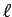
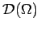
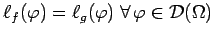
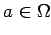
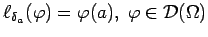
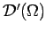
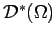
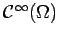

Ein lineares Funktional  auf , das im folgenden Sinne stetig ist:
heißt verallgemeinerte Funktion oder Distribution.
| Beispiel A |
eine Distribution. Derartige mit Hilfe von lokalsummierbaren Funktionen gemäß (12.214) erzeugte Distributionen nennt man regulär.
Zwei reguläre Distributionen sind genau dann gleich, d.h.
, wenn f=g f.ü. bezüglich  .
.
| Beispiel B |
|
Sei  ein beliebig fixierter Punkt. Dann ist  ebenfalls ein lineares stetiges Funktional auf , also eine Distribution, die man DIRACsche Distribution, |
Die Gesamtheit aller Distributionen bezeichnet man mit . Aus einer allgemeineren als der in Stetige lineare Funktionale angedeuteten Dualitätstheorie ergibt sich als der Dualraum von . Streng genommen wäre also  zu schreiben. Im Raum lassen sich viele Operationen unter seinen Elementen und mit Funktionen aus  definieren, u.a. die Ableitung einer Distribution oder die Faltung zweier Distributionen, die ihn nicht nur für theoretische Untersuchungen, sondern vor allem auch für viele Anwendungen aus Elektrotechnik, Mechanik usw. prädestinieren. Wegen eines Überblicks und einfacher Beispiele für zahlreiche Verwendungsmöglichkeiten verallgemeinerter Funktionen s. Lit. 12.12, 12.27. Hier wird lediglich der Begriff der Ableitung einer verallgemeinerten Funktion betrachtet.